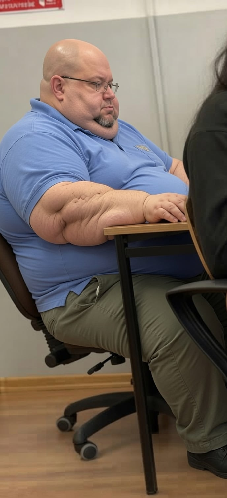

Księga rekordów, niezwykłe biografie i medyczne ciekawostki dotyczące ludzi, którzy zapisali się w historii ekstremalną wagą.

Wklej zdjęcie jako: jon.jpgCierpiał na potężny obrzęk uogólniony. W szczytowym momencie jego waga była szacowana przez lekarzy na ponad 600 kg. Do jego obrócenia w szpitalu potrzeba było aż 13 osób.
Przez lata przykuty do specjalnego łóżka, stał się znany na całym świecie dzięki apelom o pomoc. Z pomocą dietetyków zdołał schudnąć ponad 200 kg, co było wielkim wyczynem.
Amerykanka, która uchodzi za najcięższą kobietę w historii. Jej historia to także opowieść o rekordowym zrzuceniu wagi bez operacji chirurgicznej – straciła 236 kg w kilka miesięcy.